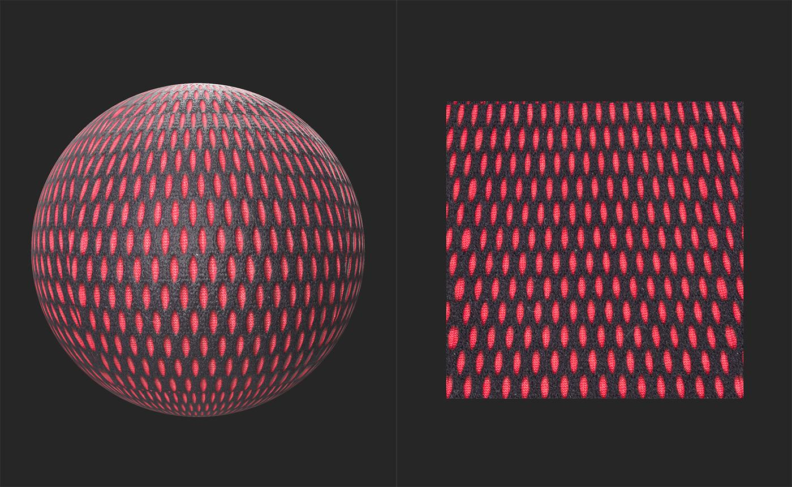
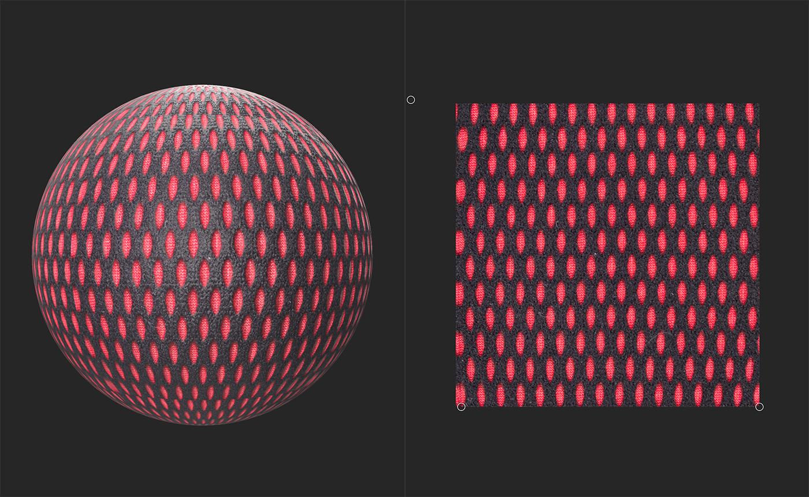

Perspective Transform
In: Tools
Description
Use the Perspective Transform tool to fix perspective issues in an image. Perspective Transform can also be used on materials.
The below image shows an example material before being fixed by the Perspective Transform tool. Notice how the shapes near the top of the 2D view are stretched vertically compared to the shapes at the bottom of the 2D view.

With the Perspective Transform, the shapes are consistent and form a grid. It would be easy from this point to use filters like Tiling or Make it Tile to convert this into a tileable material.

Usage Guide
With the Perspective Transform layer selected, a handle appears on each corner of the texture in the 2D view. Move them individually in the 2D space to correct the perspective.

Toolbar
With the Perspective Transform layer selected, a toolbar appears at the top of the 2D view. Use the Reset positions button to reset the Perspective Transform layer's handles to the default positions.